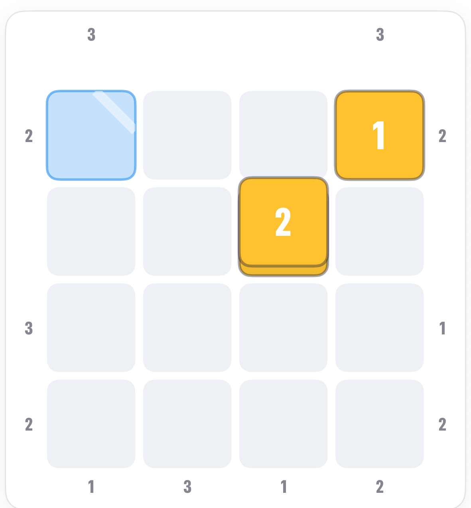
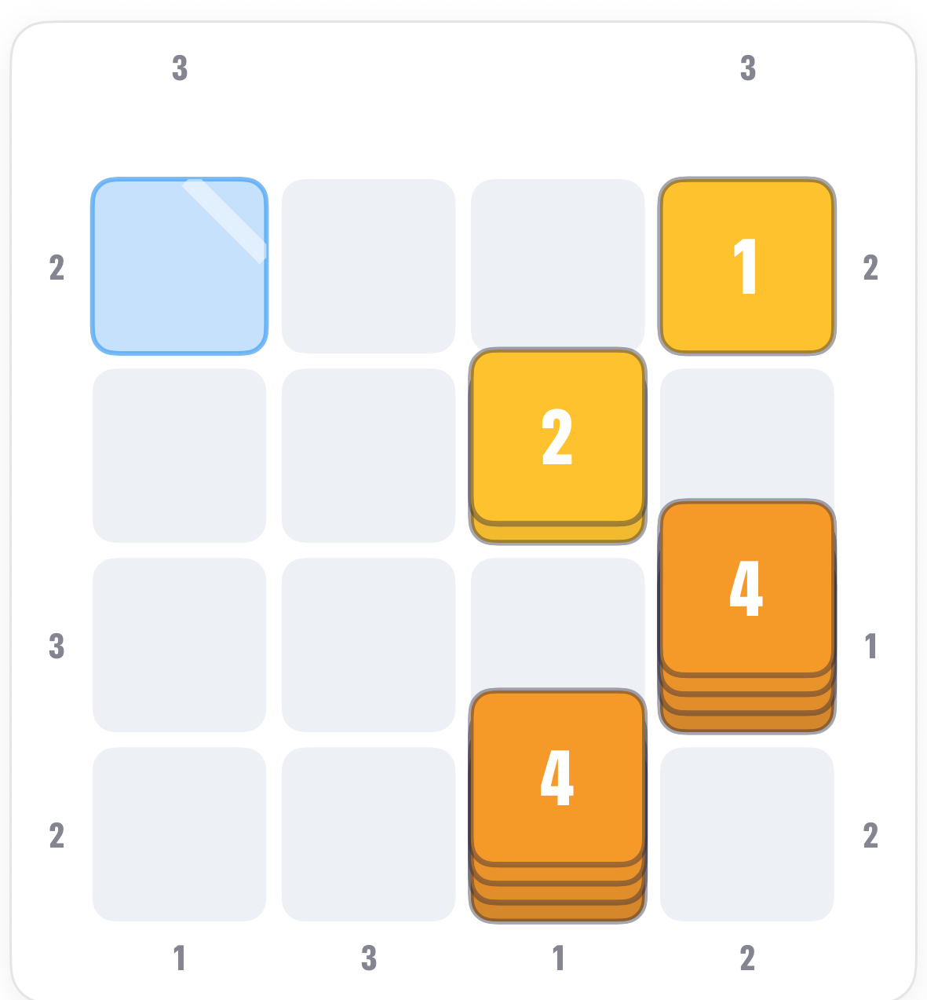
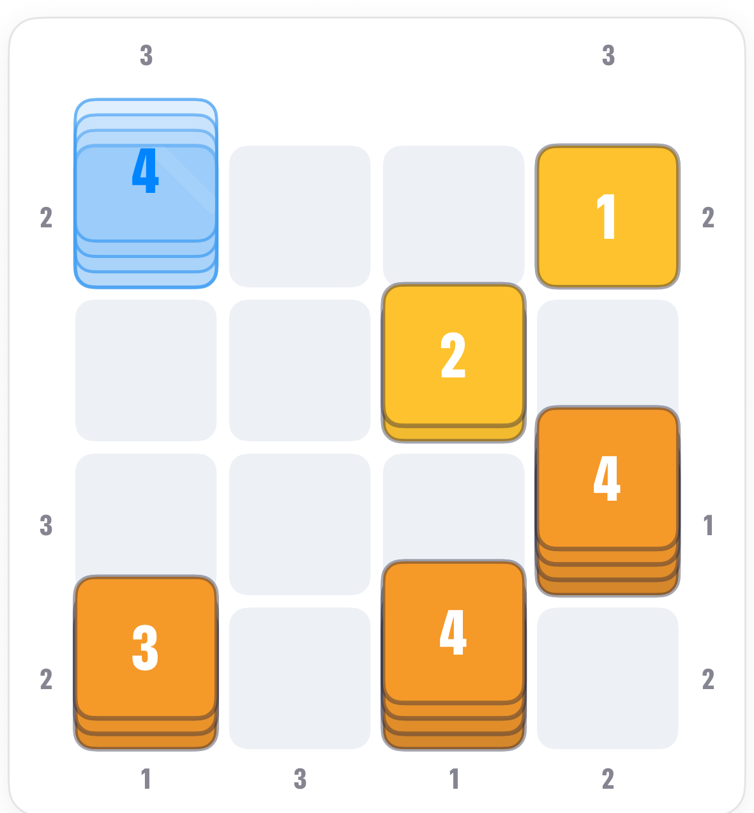
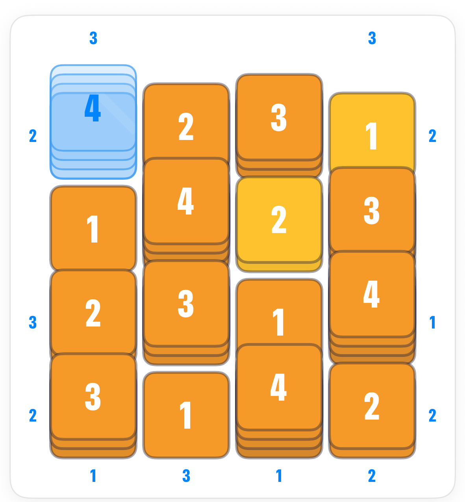

How to play Glass Towers.
Glass is Towers with some plots made of glass. A glass tower is invisible to the edge clues: it never hides anything and is never counted. It still uses up a height in its row and column, so logic, not the clues, decides it.
The board.
A 4 by 4 board with clues on every side, two towers already built, and one plot drawn pale blue in the top-left corner: the glass plot.

The rule.
So a clue of 1 with a glass 4 in the way still sees straight past it. Tap a clue and the app sweeps its line of sight through the glass.
The 1 clues.
A clue of 1 means the first tower it sees is the tallest it will see. In classic that tower is a 4. With glass, it is the tallest tower that is not glass.

The glass column.
Now the tricky one. The clue under the first column is also a 1, but that column has the glass plot at its top. Whatever stands on the glass does not count, so the 1 is satisfied by the tallest ordinary tower in the column being at the bottom.


Common questions.
Does glass still need a height?
Yes. It is a tower like any other for the once-per-row-and-column rule. Only the clues ignore it.
How do I know what height the glass is?
From what is left. When its row and column have every other height placed, the glass takes the one missing.